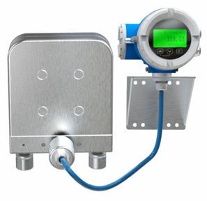

Фотогалерея
Исполнения PK и P
Внешний вид моделей сверхвысокого PK и повышенного P давления

PK — модель сверхвысокого давления

P — типоразмеры 001–002 (повышенное давление)

P — типоразмеры 003–015 (U-образные трубки)

P — типоразмер 025